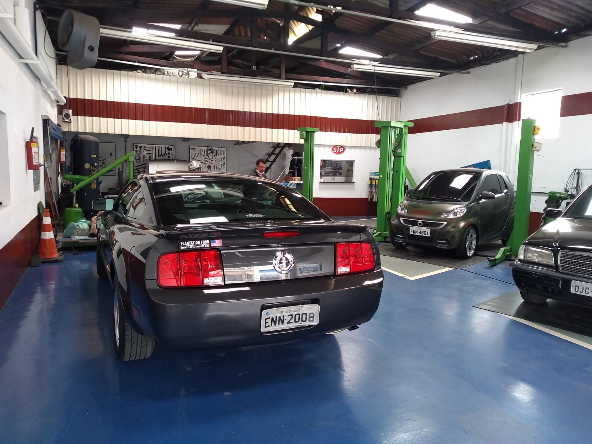
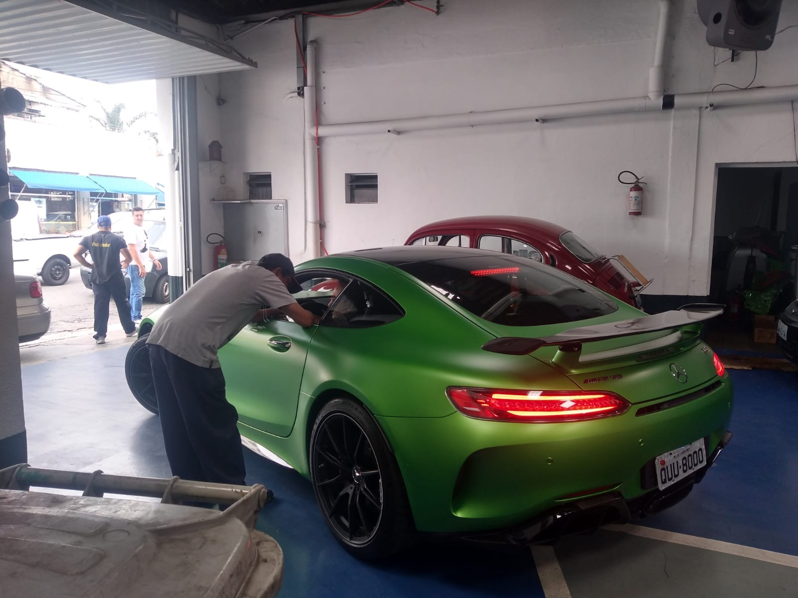
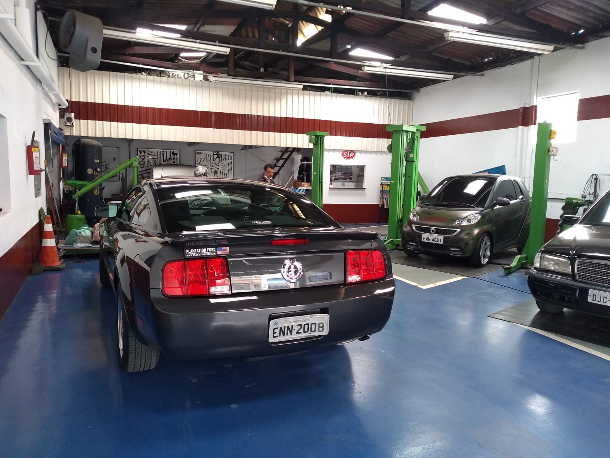
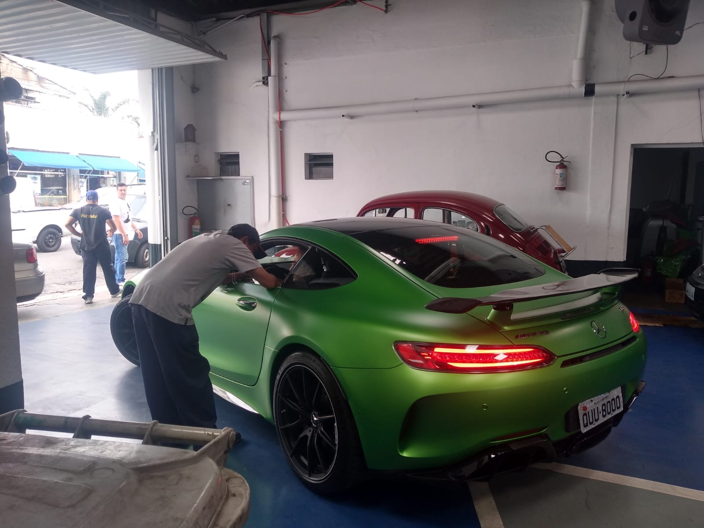
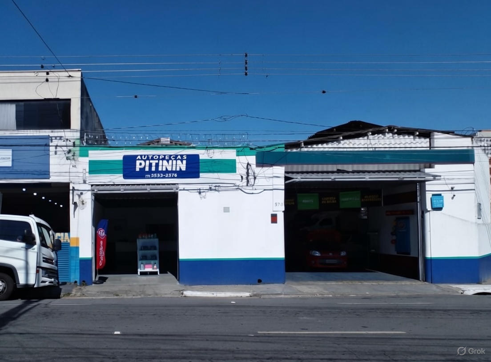
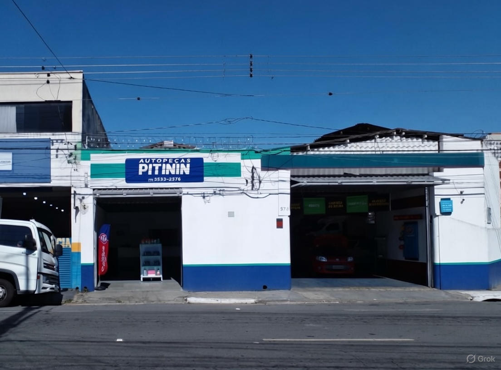

Conheça a nossa loja!
Na Pitinin, somos apaixonados por automóveis e comprometidos com a qualidade superior em peças e
serviços.
Com mais de 15 anos de experiência no mercado, oferecemos soluções completas para manutenção e
reparo do seu veículo,
desde peças originais até diagnósticos precisos. Nossa missão é garantir que você volte para a
estrada com total segurança e confiança.
Por que escolher a Pitinin? Ambiente familiar, equipe especializada e preços justos
- tudo para tornar sua experiência única.
25+
Anos de Experiência
2000+
Peças em Estoque
99%
Satisfação dos Clientes
 





 
